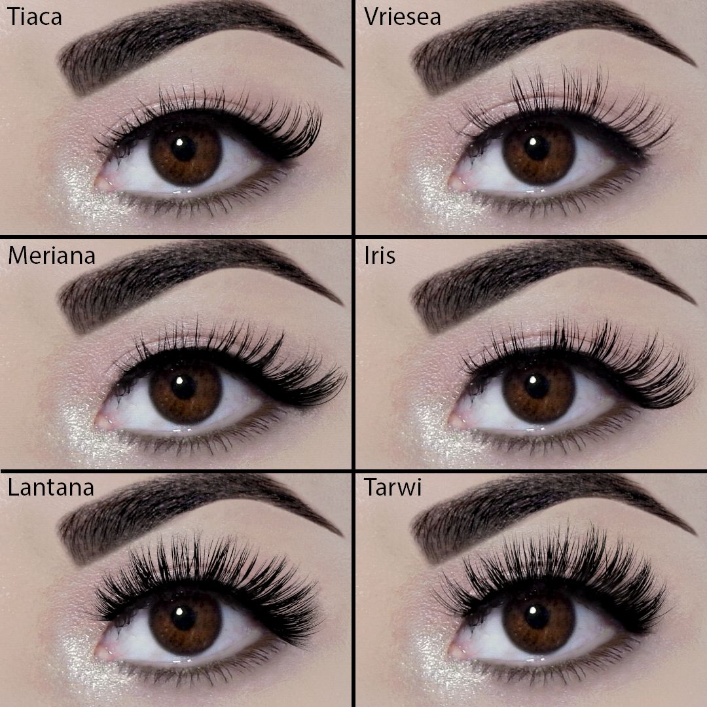

Cuida tus pestañas 😍
Las extensiones de pestañas y el lifting pueden transformar tu mirada. Pero es importante el cuidado diario.
- No uses aceites cerca de los ojos.
- Evita frotar tus ojos.
- Usa cepillos especiales para pestañas.
💋
Una mirada puede decir más que mil palabras.
Tipos de tratamientos para pestañas
- Extensiones clásicas: una extensión por cada pestaña natural. Ideal para un look natural y definido.
- Volumen ruso: varias pestañas finas por cada pestaña natural. Resultado: mirada intensa y dramática.
- Lifting de pestañas: técnica sin extensiones. Se levantan las pestañas naturales desde la raíz.
— Expertos Belleza Magazine
Una buena extensión de pestañas no se nota... se siente.